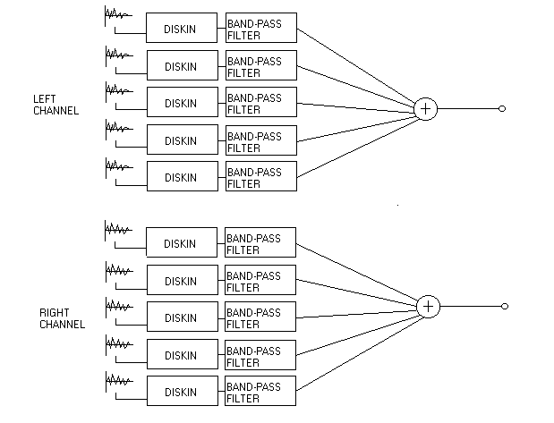

pavan@panservice.it
*Welcome!* Here you can find some works of mine. I use Csound to create music. My background is mainly classic and electronic music, and when I discovered Csound I could not stop to use it! Csound gave me the freedom to create sounds and music with the best control, no other software is able to do the same. And the funny story is that Csound is free and run everywhere. What you need is a computer and, of course...your imagination. Luca Pavan
From the beginning, of course. To enjoy the sounds produced via classic sound synthesis techniques, download my new GUI collection of Csound instruments here: Classic Sound Synthesis Techniques
To run this collection you must have DirectCsound for Windows.
Take also a look on my page If you write music with Csound, take a look at the stuff on my web page: Luca Pavan Home Page
A method to enhance stereo quality with Csound I started to be interested on stereo sound quality some months ago. With Csound I could explore some details of stereo techniques. For example you can use this instrument to get a better stereo sound, and eventually to experiment yourself: Sten.orc Sten.sco Complicated? Not so much. Look at this scheme to see how it works:  The trick is to move randomly the phase across stereo channels, to enhance what we can call spaciousness. You can do this applying a different random distribution to each channel. Then you can use bandpass filters to divide in frequency bands the sound, as it happens here. In this way you can control the amount of random phase for each band. If you use this method, remember that an amplitude reinforcement for low frequency sounds may be needed. If you like, try this method to achieve a better stereo sound for old or bad recordings. |